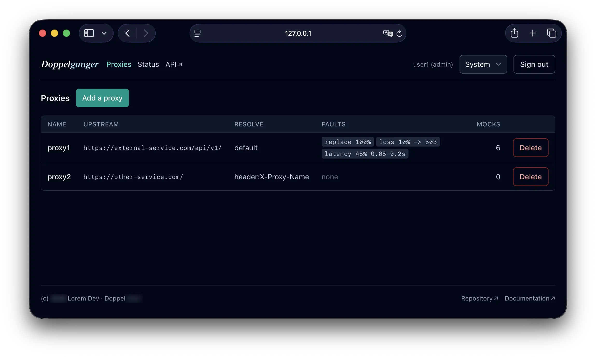
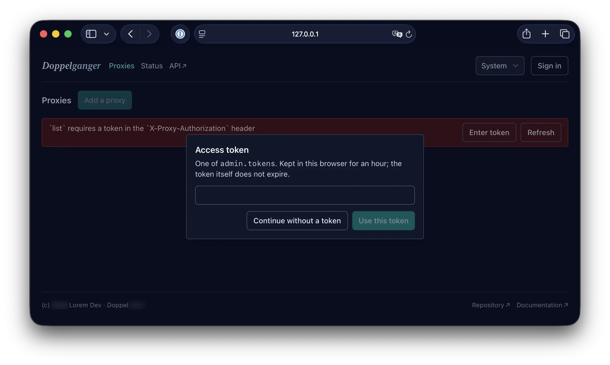
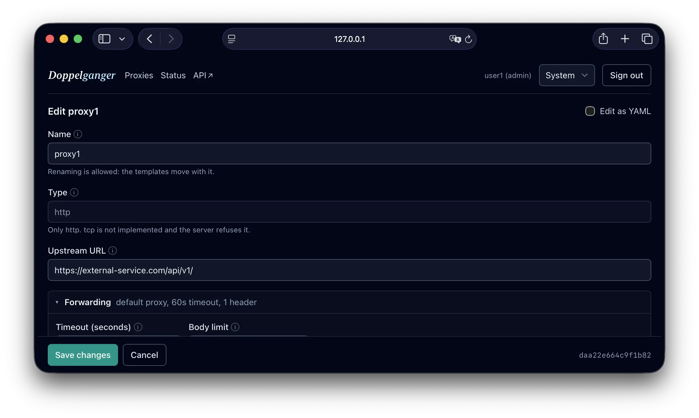
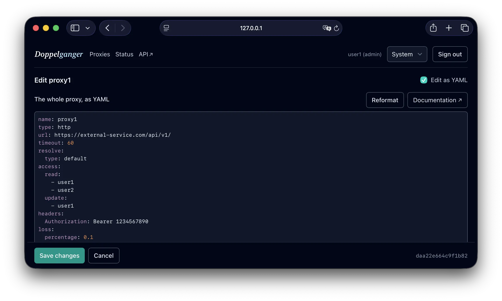

The dashboard¶

The admin listener serves a browser dashboard from its own root. It lists the proxies, edits them, shows what the process is doing, and reloads the configuration -- most of what the admin API does, without curl. Template files are the exception, and deliberately: see below.
It is on by default. Open the admin port in a browser:
http://127.0.0.1:8081/
The whole thing is compiled into the binary. There is nothing to deploy, no directory to serve, and no version of the page that can disagree with the version of Doppel serving it.
It is served compressed: the listener negotiates br and gzip from
Accept-Encoding, so the 140 KB of JavaScript and CSS the page is made of goes
out as 74 KB or less, and index.html is minified on the way into the binary.
The proxy listener is deliberately left out of that -- a client under test has to
see the encoding its upstream chose.
Every URL the dashboard shows is a real one. /proxies/alpha can be bookmarked,
reloaded and shared, because everything outside /api/ and /static/ is answered
with the page -- which is also why the API lives under /api/ in the first place:
/status used to be an endpoint and a page, and a reload got the JSON.
Turning it on and off¶
admin:
dashboard: true # the default
title: "Doppel" # the default
dashboard: false leaves /, /static/* and /robots.txt unrouted -- they
answer 404 like any other unknown path -- and changes nothing about the JSON API.
Use it when the admin port is reachable from somewhere a browser page has no
business being. To turn off the admin API entirely, that is admin.enable, not
this.
Both fields take effect on restart, because the routes are built once at startup.
title is what the header shows and what the browser tab is called. It is worth
setting when several Doppels are open at once:
admin:
title: "billing-api (staging)"
At most 64 characters, no control characters, and any language you like -- it is a heading, not an identifier.
Leave title out and the header shows the project's wordmark instead of a default
string. Set it, and the header shows exactly what you wrote: the browser tab takes
the same text either way.
Who can use it¶
The dashboard is a client of the admin API and is bound by exactly the same
access rules. It has no privileges of its own, and there is no dashboard
password: the token is the one from admin.tokens.
What follows from that is worth stating plainly, because it surprises people:
The page works without a token. If access.list and access.read are
public, an anonymous visitor sees the proxy list and can open a proxy. The token
dialog opens once, and it has a "Continue without a token" button -- declining
leaves a working page rather than a wall.
A refusal offers the two things that fix it. "Read of alpha requires access
read" is about the token, and a page reads once when it opens -- so the banner
carries Enter token and Refresh. Refreshing is a button rather than something
the page does when a token arrives: a form holds a half-typed document, and replacing
that because someone signed in elsewhere would lose work.

Actions the caller may not perform are visible but disabled, with the reason
in the tooltip. The page asks the server what the caller may do
(GET /api/v1/access) rather than guessing, so a disabled button means the server
would have refused. A missing button reads as a broken page; a disabled one
explains itself.
Signing out returns to the anonymous view. It does not lock the page.
The token in the browser¶
Entering a token stores it in localStorage for one hour, then the page forgets
it and asks again. Two things that is not:
- Not a session. The token does not expire on the server. Forgetting it here
only means this browser stops presenting it. Revoking a token is a
configuration change -- edit
admin.tokensand reload. - Not a security boundary. Anything running in the page can read
localStorage. The hour exists so an unattended browser stops holding a working admin token indefinitely, which is a smaller and more honest claim.
On a public: true deployment the page never mentions tokens at all.
What the pages do¶
Proxies lists every proxy with its upstream, how it is resolved, the faults
configured on it and how many mocks it has. The list refetches itself once a
minute -- so a change made by another operator, by doppel config push, or by a
reload appears without anyone pressing anything. It pauses while the tab is
hidden.
Editing opens a form over the whole proxy document: the upstream, timeouts, body limits, resolution, injected headers, the three fault settings, per-proxy access overrides, and the mocks with their matching rules and responses.

Every field carries an (i) to its section of Every parameter -- the type, the bounds, an example in place -- and the link is versioned, so it describes the Doppel serving the page rather than whatever has been released since.
A field is checked as it is typed: a name with a space in it, a timeout of 5000, a
loss rate of 45, a selector without its leading dot. Those bounds are read from
GET /api/v1/schema at load, so they are
the server's own rules rather than a second copy in the page -- and what needs more
than one field to judge is still the server's answer on save, reported against the
field it is about.
A proxy has thirteen fields and any number of mocks, and most edits touch one of
them -- so the name, the type and the upstream are always on screen and everything
else is a folded section that says what is inside it: Faults none,
Access overrides inherited, Mocks 3. Save and Cancel sit in a bar pinned to the
bottom of the window, so they are reachable whatever is open.
On a public: true deployment the Access overrides section is not there at all.
Nothing in a proxy's access block decides anything while the admin API is
unauthenticated -- every action answers as public regardless, which the process
also says among its startup advisories -- so four fields that change no outcome
would be the page disagreeing with the binary serving it. A proxy whose document
still holds overrides says so in one line instead, because the YAML mode shows an
access block the form otherwise has no section for.
The name can be edited like any other field. Renaming moves the proxy's template
files with it, and the page says which happened -- "Renamed alpha to billing-api"
rather than "Updated". Clients selecting that proxy by X-Proxy-Name have to use the
new name from then on, which is the one thing a rename cannot do for you.
A save that removes something asks first, and names what: the mock
\one-widget`,the injected header `X-Trace`,`filter` from variables from the
query of `one-widget``. The form has a Remove button beside every entry and no undo,
so the question belongs on the button that makes those removals real rather than on
each one along the way -- taking one mock out and putting another in is a single edit.
A save that only changes values does not ask: a changed field is visible in the field
it is in.
Deleting a proxy asks too, and says what goes with it: its template files.
Saving sends the revision the form was loaded at, so a proxy someone else changed in the meantime is refused rather than overwritten -- the page says so and asks you to reload.
Editing a proxy as YAML¶
Edit as YAML swaps the form for the whole proxy document, in the shape
main.yaml has it:
name: alpha
type: http
url: https://alpha.example.com/api/
timeout: 30
mocks:
- name: one-widget
request:
method: GET
url: ^/widgets/(?P<id>\d+)$
response:
status: 200
json: '{"id": "{{ id }}"}'

The form is better for changing one field; this is better for everything else -- pasting a proxy from a colleague, reordering mocks, copying a block out of a configuration file. Tab indents inside the document, Reformat tidies it, and saving tidies it too, so a refused save leaves readable YAML on screen.
It is checked against the running Doppel's own schema as you type, and Save is refused while it does not match: a field the schema does not know is named, and so is a value out of range. What needs more than one field to judge is still the server's answer.
Two things it does not do. It does not keep comments -- the document is stored as
data, so there is nowhere to put them -- and it edits one proxy rather than the
whole configuration. For the whole file, edit main.yaml and reload.
Template files are not managed here. The dashboard had a section for them and it
was the wrong shape: a file store inside a form over a document, with a Save of its
own that did not wait for the form's, and a rule the page could not enforce -- the
server refuses an upload no saved mock declares. They stay in the
admin API, which is where doppel config push and any
script already write them.
What the form does with a mock that answers with a template file: it shows which file, in a field it will not let you edit, and lets you move that mock onto a text or JSON body instead. A mock that has no template cannot be given one from here -- the answer choices are Text body and JSON body. Switching away from a template is undoable while the page is open, because the name cannot be typed back in.
Status shows uptime, the configuration revision in effect and the resolution
state of each proxy, and carries the reload button. Saving in the form needs no
reload -- a write through the API is in force when it answers -- so the button is
for a configuration changed behind the dashboard: main.yaml edited by hand,
doppel config push, another instance. Reload re-reads the store and reports what
it applied, including the sections that need a restart instead.
API is not a page of the dashboard but a link to the Swagger UI the same
listener serves, at /swagger-ui/. It opens in a new tab, because it is a
different application and going there should not throw away a half-filled form.
Theme¶
Light, dark, or whatever the operating system says. The default is the last of those, and the choice is remembered per browser.
Not indexed¶
The dashboard refuses search engines three ways, because crawlers fail
differently: an X-Robots-Tag: noindex, nofollow, noarchive header on every
response including the errors, a robots meta element in the page for a crawler
that reads markup and ignores headers, and robots.txt disallowing everything.
The page also carries a content security policy that permits scripts, styles and
connections from this origin only, and forbids framing. No unsafe-inline
anywhere: the configuration reaches the page as the contents of a JSON element
rather than as an inline script.
One inline stylesheet is allowed, and by its hash rather than by opening the policy -- the code editor's own, which every editor on the page renders. Blocking it changed nothing visible and reported a violation to the console for each editor, which is a poor way to treat the place an operator looks for their own problems. A test recomputes that hash from the installed library, so an upgrade that changes the stylesheet fails a build rather than filling a console.
When the root answers 503¶
{
"status": "error",
"code": "DASHBOARD_NOT_BUILT",
"message": "this binary was built without the dashboard's static assets ..."
}
The binary was compiled without frontend/dist. Released binaries and the
published image always carry the dashboard -- the release refuses to publish one
that does not, and docker build builds the assets itself when they are absent --
so this is a binary built from source without building the frontend first:
npm --prefix frontend ci
npm --prefix frontend run build
cargo build --release -p doppel-cli
That order matters: the assets are embedded at compile time, so rebuilding them without rebuilding the binary changes nothing about what it serves.
If Node is not available and the JSON API is enough, admin.dashboard: false
stops the route being served at all, which is a clearer answer than a 503.